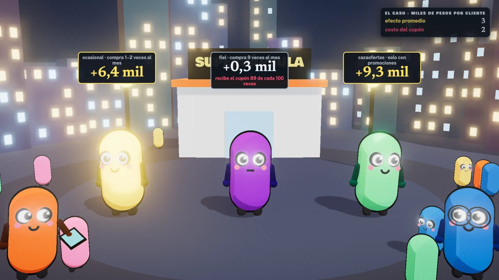
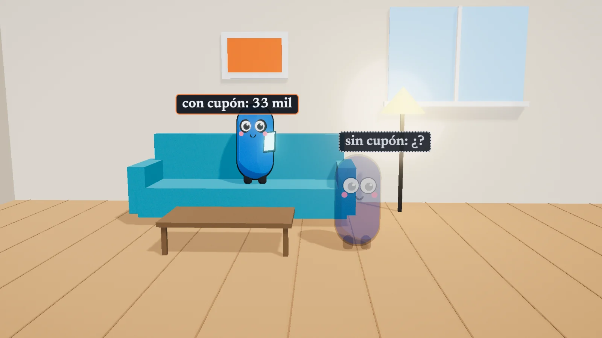
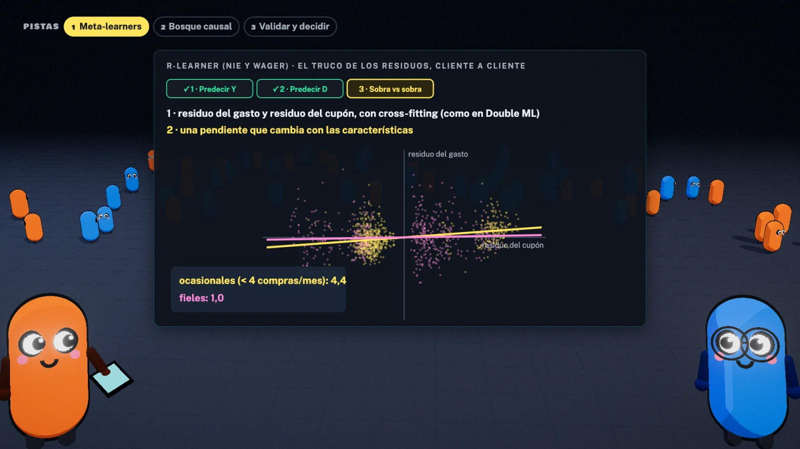
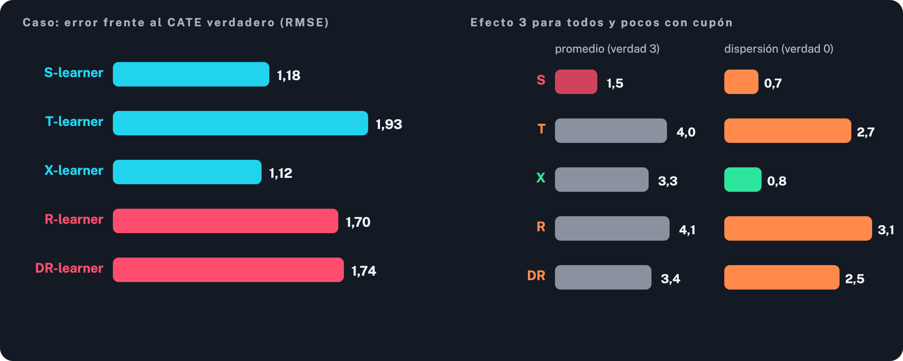
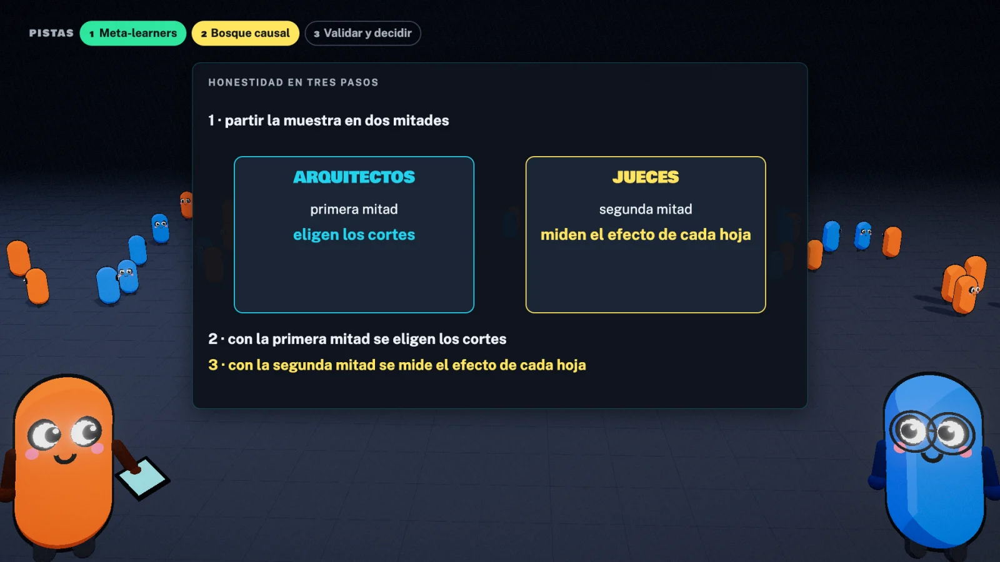
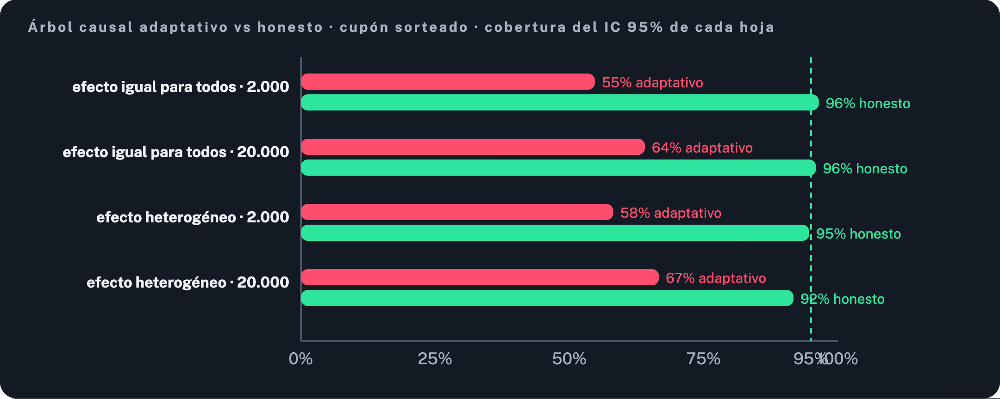
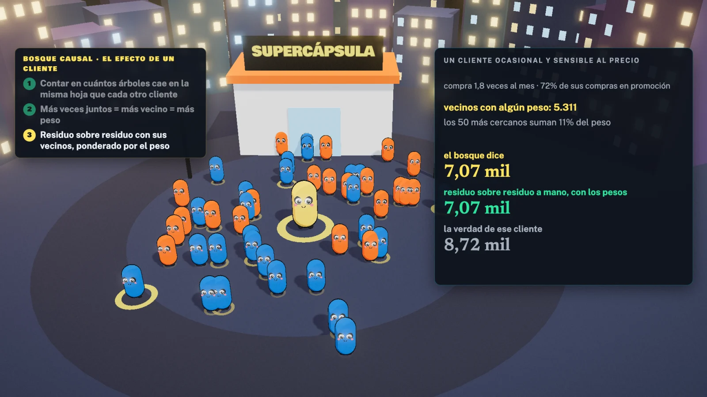
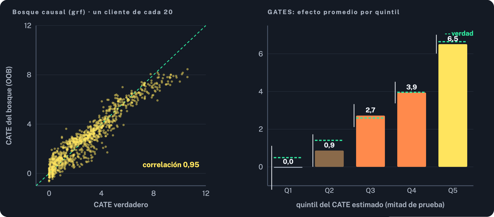
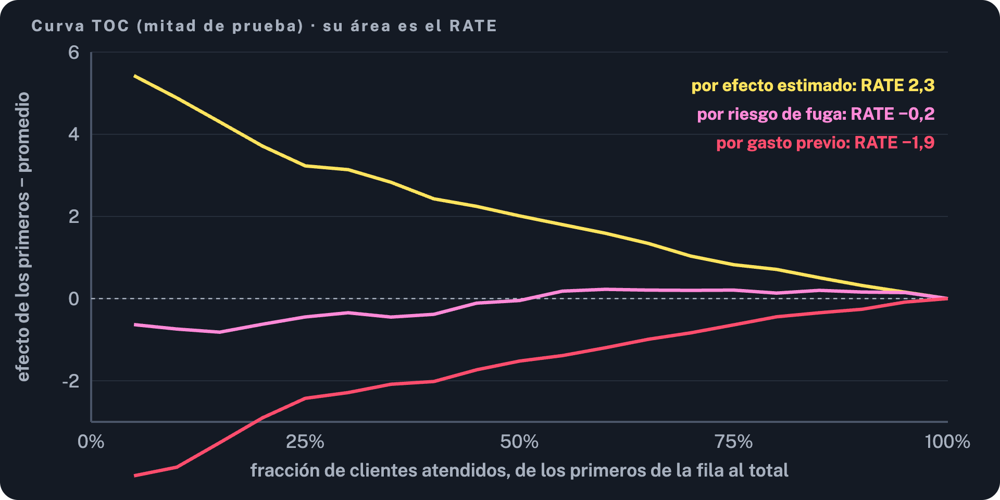
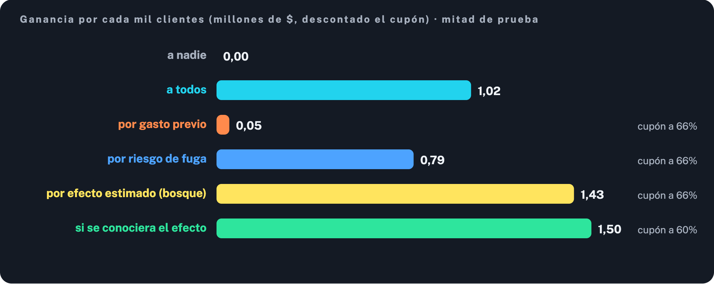

source("codigo/cml/cml.R")
library(grf)
df <- read.csv("data/cml/datos_cupon.csv")
XC <- c("gasto_prev", "frecuencia", "antiguedad", "sens_precio", "edad", "ingreso", "distancia", "competidor",
"reclamos", "recencia", "hogar", "app", "notif", "abre_mail", "categoria")
X <- as.matrix(df[, XC]); Y <- df$Y; W <- df$D; tau <- df$tau; COSTO <- 23 Causal ML (2): efectos heterogéneos y personalización
¿A quién le mando el cupón? Meta-learners, árbol y bosque causal, validar el orden y decidir
En este capítulo.
- El efecto promedio puede esconder clientes a los que el cupón les cambia mucho la conducta y otros a los que no les cambia nada. El CATE separa esos efectos según las características.
- De cada cliente vemos un solo mundo (con o sin cupón): no hay «respuesta correcta» para medir el error del CATE como en una predicción cualquiera.
- Los meta-learners (S, T, X, R, DR) arman el CATE con modelos de predicción comunes. El R y el DR son las ideas del capítulo anterior, cliente a cliente.
- El árbol causal corta buscando efectos distintos; la honestidad separa los datos que eligen los cortes de los que miden. El bosque causal es residuo sobre residuo en el barrio de cada cliente (Wager y Athey 2018; Athey et al. 2019).
- No se valida el efecto de cada cliente: se valida el orden (GATES, curva TOC y RATE). Y se decide por efecto, no por riesgo ni por gasto.
Video. Este capítulo acompaña al video «Causal ML · Parte 2: ¿A quién le mando el cupón?». Las imágenes del capítulo son fotogramas de ese video.
Preparación
Seguimos con SuperCápsula y su cupón (capítulo anterior). El cupón cuesta 2,0 mil pesos por cliente y sube el gasto en 3,01 mil en promedio: mandárselo a todos «conviene». La pregunta ahora es a quién.
import sys, json, numpy as np, pandas as pd
sys.path.insert(0, "codigo/cml")
import cml, gen_datos_cupon as G
G.ESCALA = json.load(open("data/cml/S0_parametros.json"))["escala_tau"] # escala del efecto del caso
df = pd.read_csv("data/cml/datos_cupon.csv")
XC = G.X_COLS
X, Y, D, tau = df[XC].to_numpy(float), df.Y.to_numpy(float), df.D.to_numpy(float), df.tau.to_numpy()
rng = np.random.default_rng(6); idx = rng.permutation(len(df)); tr, te = idx[: len(df) // 2], idx[len(df) // 2:]3.1 Del efecto promedio al CATE

Con el generador del caso podemos calcular el efecto verdadero de tres perfiles:
- el ocasional, que compra una o dos veces al mes y cuida el precio: +6,4 mil;
- la fiel, que compra nueve veces al mes, cupón o no cupón: +0,3 mil. Y marketing le manda el cupón 89 de cada 100 veces;
- el cazaofertas, que solo compra con promociones: +9,3 mil.
El efecto condicional promedio es el efecto del tratamiento entre clientes con las mismas características: \[\tau(x) = \mathbb E\left[\,Y(1) - Y(0) \mid X = x\,\right].\] Sirve para decidir a quién tratar: mandar el cupón si \(\tau(x)\) supera su costo. En nuestros datos, 60 de cada 100 clientes tienen un efecto verdadero mayor que 2,0.
El problema de fondo. De cada cliente vemos un solo mundo. Para predecir el gasto comparamos la predicción con el gasto real; para el efecto de un cliente no hay respuesta correcta con la cual comparar. Por eso los métodos de este capítulo se arman con las ideas del capítulo anterior y se validan por grupos y por el orden en que ponen a los clientes.

3.2 Pista 1 · Meta-learners
Una receta que arma el CATE con modelos de predicción comunes (bosques, boosting, lasso…) (Künzel et al. 2019). El nombre viene de que el modelo de predicción es intercambiable.
| Receta | Ojo | |
|---|---|---|
| S | 1) Un modelo del gasto con D y X juntos. 2) Predecir a cada cliente con D = 1 y con D = 0. 3) Restar. | Es el «atajo» del capítulo anterior: regulariza el cupón y encoge el efecto. |
| T | 1) Un modelo del gasto solo con los con cupón. 2) Otro solo con los sin cupón. 3) Predecir con los dos y restar. | Los errores de los dos modelos se suman: inventa diferencias, sobre todo si un grupo es chico. |
| X | 1) Los dos modelos del T. 2) Cruzarlos: efecto imputado \(Y - \hat\mu_0(X)\) para los con cupón y \(\hat\mu_1(X) - Y\) para los sin cupón. 3) Predecir esos efectos con X en cada grupo y promediar, con más peso al grupo grande. | Pensado para grupos desbalanceados (Künzel et al. 2019). |
| R | 1) Residuos del gasto y del cupón, con cross-fitting. 2) Buscar una pendiente que cambie con X: regresar \(\tilde Y/\tilde D\) sobre X con pesos \(\tilde D^2\). | Es FWL otra vez, cliente a cliente (Nie y Wager 2021). |
| DR | 1) El aporte AIPW de cada cliente (capítulo anterior), su pseudo-resultado. 2) Predecirlo con X. | La ruta doblemente robusta, cliente a cliente (Kennedy 2023). |

Con los mismos residuos del capítulo anterior, la pendiente de residuo sobre residuo es 4,4 entre los ocasionales (menos de 4 compras al mes) y 1,0 entre los fieles: esa es la intuición del R-learner.
set.seed(6); idx <- sample(nrow(df)); tr <- idx[1:(nrow(df) / 2)]; te <- idx[(nrow(df) / 2 + 1):nrow(df)]
Xd <- as.data.frame(X)
# S-learner: un modelo con D adentro
fS <- ranger(x = cbind(Xd[tr, ], D = W[tr]), y = Y[tr], num.trees = 300, min.node.size = 20, seed = 1)
tS <- predict(fS, cbind(Xd[te, ], D = 1))$predictions - predict(fS, cbind(Xd[te, ], D = 0))$predictions
# T-learner: un modelo por grupo
t1 <- tr[W[tr] == 1]; t0 <- tr[W[tr] == 0]
tT <- pred_y(bosque_y(Xd[t1, ], Y[t1]), Xd[te, ]) - pred_y(bosque_y(Xd[t0, ], Y[t0]), Xd[te, ])
# DR-learner: pseudo-resultado AIPW (con cross-fitting) y un bosque que lo predice
nu <- nuisance_aipw(Y[tr], W[tr], Xd[tr, ]); g <- aipw_scores(Y[tr], W[tr], nu$mu0, nu$mu1, nu$e, 0.02)
tDR <- pred_y(bosque_y(Xd[tr, ], g), Xd[te, ])
rmse <- function(a) sqrt(mean((a - tau[te])^2))
round(c(S = rmse(tS), T = rmse(tT), DR = rmse(tDR)), 2) S T DR
1.38 2.06 2.51 args = (Y[tr], D[tr], X[tr], X[te])
th = {k: f(*args) for k, f in [("S", cml.meta_s), ("T", cml.meta_t), ("X", cml.meta_x), ("R", cml.meta_r), ("DR", cml.meta_dr)]}
pd.Series({k: np.sqrt(np.mean((v - tau[te]) ** 2)) for k, v in th.items()}).round(2) # error frente al CATE verdaderoS 1.18
T 1.93
X 1.12
R 1.70
DR 1.74
dtype: float64
En el caso, el error es 1,18 para el S, 1,93 para el T, 1,12 para el X, 1,70 para el R y 1,74 para el DR. En la simulación con efecto 3 para todos y 14% con cupón, el S promedia 1,5 (encoge) y el T dice que el efecto varía 2,7 mil entre clientes (inventa diferencias), cuando no varía nada; el X varía 0,8.
La idea del R y del DR es la correcta (protegen contra la confusión, como en el capítulo anterior), pero con un bosque común en la última etapa quedaron ruidosos: la última etapa predice un pseudo-resultado muy ruidoso con un modelo hecho para predecir gastos. El bosque causal es, justamente, una forma cuidadosa de hacer el R-learner, y baja el error a 0,72.
3.3 Pista 2 · El árbol causal y la honestidad
Un árbol de regresión (CART, clase 7) elige el corte que deja las hojas con gastos lo más distintos posible. El árbol causal cambia una sola cosa: el corte busca hojas con efectos distintos. Dentro de cada hoja hay clientes con y sin cupón que se parecen, y el efecto de la hoja se mide comparándolos: un mini-experimento (Athey y Imbens 2016). En SuperCápsula, la variable que el bosque más usa para cortar es la frecuencia de compra: los que compran menos de 4 veces al mes tienen un efecto promedio de 4,4 y los demás de 1,1.
La trampa. El árbol eligió cada hoja porque en estos datos su efecto se veía extremo. Si después mide el efecto de esa hoja con los mismos datos, el efecto queda inflado (la maldición del ganador) y el intervalo de confianza miente.
- Partir la muestra en dos mitades.
- Con la primera (los arquitectos), elegir los cortes.
- Con la segunda (los jueces), medir el efecto de cada hoja.


Con 2.000 clientes y efecto 3 para todos, las hojas del árbol adaptativo se separan hasta en 12,0 mil y sus intervalos cubren el 3 solo 55 de cada 100 veces; las del honesto, 96.
# Un solo corte, D sorteado y efecto igual para todos: ¿cuánto cubre el IC de cada hoja?
efecto_hoja <- function(y, d) { t <- mean(y[d == 1]) - mean(y[d == 0]); se <- sqrt(var(y[d == 1]) / sum(d) + var(y[d == 0]) / sum(1 - d)); c(t, se) }
un_corte <- function(Xs, y, d) { # el corte que más separa los efectos
best <- -Inf; for (j in seq_len(ncol(Xs))) for (c in quantile(Xs[, j], seq(.1, .9, .1))) {
L <- Xs[, j] <= c; if (min(sum(L & d == 1), sum(L & d == 0), sum(!L & d == 1), sum(!L & d == 0)) < 30) next
tl <- efecto_hoja(y[L], d[L])[1]; trr <- efecto_hoja(y[!L], d[!L])[1]; crit <- sum(L) * tl^2 + sum(!L) * trr^2
if (crit > best) { best <- crit; out <- c(j, c) } }; out }
cubre <- function(honesto, n = 2000) {
i <- sample(nrow(df), n); Xs <- X[i, ]; d <- rbinom(n, 1, 0.5); y <- df$y0[i] + 3 * d # cupón sorteado, efecto 3
a <- if (honesto) 1:(n / 2) else 1:n; b <- if (honesto) (n / 2 + 1):n else 1:n
cc <- un_corte(Xs[a, ], y[a], d[a]); L <- Xs[b, cc[1]] <= cc[2]
sapply(list(L, !L), function(h) { e <- efecto_hoja(y[b][h], d[b][h]); abs(e[1] - 3) <= 1.96 * e[2] }) }
set.seed(7)
c(adaptativo = mean(replicate(100, cubre(FALSE))), honesto = mean(replicate(100, cubre(TRUE))))adaptativo honesto
0.765 0.925 def cobertura(honest, R=60, n=2000):
c = []
for r in range(R):
d = G.generar(n=n, seed=700_000 + r, sorteo=0.5, tau_const=3.0) # cupón sorteado, efecto 3 para todos
ct = cml.CausalTree(max_depth=3, min_leaf=60).fit(d[XC].to_numpy(float), d.Y.to_numpy(float), d.D.to_numpy(float), honest=honest, seed=r)
c += [abs(t - 3) <= 1.96 * s for t, s, _ in ct.leaf_est.values()]
return np.mean(c)
{"adaptativo": round(cobertura(False), 2), "honesto": round(cobertura(True), 2)}{'adaptativo': np.float64(0.53), 'honesto': np.float64(0.96)}La honestidad cuesta muestra: la mitad de los datos solo elige cortes y la otra mitad solo mide. Un trabajo de 2025 la describe como un intercambio entre sesgo y varianza: a veces ayuda y a veces estorba si solo se quiere predecir bien el efecto (Hou et al. 2025) (autores completos sin verificar). Para inferir (intervalos que funcionen) sigue siendo necesaria. En nuestra simulación con efecto heterogéneo y 20.000 clientes, el árbol honesto tuvo además menos error: 1,41 contra 1,50.
3.4 El bosque causal
- Entrenar muchos árboles causales honestos, cada uno con una submuestra distinta.
- Contar en cuántos árboles el cliente cae en la misma hoja que cada otro cliente: más veces juntos, más vecino, más peso \(\alpha_i(x)\).
- Hacer residuo sobre residuo con esos pesos: \(\hat\tau(x) = \dfrac{\sum_i \alpha_i(x)\,\tilde Y_i \tilde D_i}{\sum_i \alpha_i(x)\,\tilde D_i^2}\). Es el teorema de Frisch, Waugh y Lovell en el barrio de cada cliente (Athey et al. 2019).

cf <- causal_forest(X, Y, W, num.trees = 2000, seed = 8) # honesto por defecto
tau_oob <- predict(cf, estimate.variance = TRUE)
c(ate = average_treatment_effect(cf), corr = cor(tau_oob$predictions, tau))ate.estimate ate.std.err corr
2.9436712 0.1248088 0.9531003 # el paso 3 a mano, para un cliente: residuo sobre residuo ponderado por sus vecinos
i <- 108; a <- as.numeric(get_forest_weights(cf, newdata = X[i, , drop = FALSE]))
Yr <- Y - cf$Y.hat; Wr <- W - cf$W.hat
c(bosque = predict(cf, X[i, , drop = FALSE])$predictions, a_mano = sum(a * Yr * Wr) / sum(a * Wr^2), verdad = tau[i]) bosque a_mano verdad
7.067269 7.070309 8.719100 # econml no carga bajo reticulate (arrastra numba/llvmlite), así que este bloque no se ejecuta al compilar el apunte.
# Valores de una corrida aparte con Python 3.11 (econml 0.17.1, 20-nov-2026): ATE 2.938 · correlación con el CATE verdadero 0.954 · RMSE 0.732
from econml.dml import CausalForestDML
from sklearn.ensemble import RandomForestRegressor, RandomForestClassifier
cf = CausalForestDML(model_y=RandomForestRegressor(300, min_samples_leaf=20, max_features=0.4, random_state=1),
model_t=RandomForestClassifier(300, min_samples_leaf=20, max_features=0.4, random_state=1),
discrete_treatment=True, n_estimators=1000, min_samples_leaf=20, cv=5, random_state=8)
cf.fit(Y, D.astype(int), X=X)
th = cf.effect(X)
cf.ate(X), np.corrcoef(th, tau)[0, 1], np.sqrt(np.mean((th - tau) ** 2))Para el cliente ocasional y sensible al precio del video, el bosque dice 7,07, el cálculo a mano con los pesos da 7,07 y la verdad es 8,72. En todos los clientes, la correlación entre el CATE del bosque y el verdadero es 0,95, y el promedio, 2,94 (verdad 3,01).

- Los intervalos de cada cliente cubren el efecto verdadero 89 de cada 100 veces, no 95. El efecto individual es ruidoso (Knaus 2022): se decide con grupos y con el orden.
- La importancia de variables dice dónde cortó el bosque, no el efecto causal de esas variables. Leerla como causal es una práctica común y dudosa.
3.5 Pista 3 · Validar el orden: GATES, TOC y RATE
- Entrenar el bosque con una mitad de los clientes.
- En la otra mitad, ordenar a los clientes por su CATE estimado y partirlos en cinco grupos iguales.
- Medir el efecto promedio de cada grupo con la ruta doblemente robusta (los aportes AIPW de un bosque entrenado en esa mitad).
Si el orden es real, las barras suben como escalera (Chernozhukov et al. 2025).
La curva TOC mide, para cada fracción \(q\) de los primeros de la fila, cuánto más efecto tienen que el promedio. Su área es el RATE (Yadlowsky et al. 2025). Sirve para comparar reglas para ordenar clientes: por efecto estimado, por riesgo, por gasto.
set.seed(81); idx <- sample(nrow(df)); tr <- idx[1:(nrow(df) / 2)]; te <- idx[(nrow(df) / 2 + 1):nrow(df)]
cf_tr <- causal_forest(X[tr, ], Y[tr], W[tr], num.trees = 2000, seed = 81) # aprende el orden
cf_ev <- causal_forest(X[te, ], Y[te], W[te], num.trees = 2000, seed = 82) # mide
th_te <- predict(cf_tr, X[te, ])$predictions; sc <- get_scores(cf_ev)
q <- cut(rank(th_te, ties.method = "first"), 5, labels = 1:5)
round(rbind(GATES = tapply(sc, q, mean), verdad = tapply(tau[te], q, mean)), 2) 1 2 3 4 5
GATES -0.05 0.87 2.72 3.94 6.51
verdad 0.49 1.41 2.59 3.96 6.64sapply(list(efecto = th_te, riesgo = df$riesgo[te], gasto = df$gasto_prev[te]),
function(p) rank_average_treatment_effect(cf_ev, p, target = "AUTOC")$estimate) efecto riesgo gasto
2.2563669 -0.1719343 -1.8802178 # GATES con el DR-learner: orden aprendido en una mitad, aportes AIPW (cross-fitting) en la otra
th_dr = cml.meta_dr(Y[tr], D[tr], X[tr], X[te])
mu0, mu1, e = cml.nuisance_aipw(Y[te], D[te], X[te]); g = cml.aipw_scores(Y[te], D[te], mu0, mu1, e)
q = pd.qcut(pd.Series(th_dr).rank(method="first"), 5, labels=False) + 1
pd.DataFrame({"GATES": pd.Series(g).groupby(q).mean(), "verdad": pd.Series(tau[te]).groupby(q).mean()}).T.round(2) 1 2 3 4 5
GATES 0.36 1.49 2.31 3.87 6.20
verdad 0.72 1.81 2.70 3.80 6.04
En SuperCápsula los GATES suben de -0,0 a 6,5 mil (los verdaderos, de 0,5 a 6,6). El RATE ordenando por efecto estimado es 2,3; por riesgo de fuga, -0,2; por gasto previo, -1,9.
Un histograma disperso de CATE no prueba heterogeneidad: el T-learner dibuja montañas donde no hay. Lo que se valida es si la escalera sube y si la curva TOC está por encima de cero.
3.6 Hiperpersonalización = decidir
La regla: mandar el cupón si el CATE estimado supera el costo. Las alternativas habituales focalizan por gasto previo (los mejores clientes) o por riesgo de fuga (los que hay que retener). Las comparamos en la mitad de prueba, mandando el cupón a la misma cantidad de clientes que elige el bosque, y medimos la ganancia con el efecto verdadero (el caso es sintético).

Por cada mil clientes, en millones de pesos: a todos, 1,02; por gasto previo, 0,05 (los que más gastan son los fieles, y a ellos el cupón no les cambia nada); por riesgo de fuga, 0,79, menos que mandárselo a todos (muchos se van por un competidor o un reclamo, y un cupón no los retiene); por efecto estimado, 1,43; si se conociera el efecto de cada uno, 1,50. Sin conocer la verdad, con los aportes AIPW de la mitad de prueba, el orden es el mismo (por efecto 1,35, a todos 0,80, por riesgo 0,67).
k <- round(mean(th_te > COSTO) * length(te)); top <- function(s) { m <- rep(FALSE, length(s)); m[order(-s)[1:k]] <- TRUE; m }
pol <- list(todos = rep(TRUE, length(te)), gasto = top(df$gasto_prev[te]), riesgo = top(df$riesgo[te]), efecto = th_te > COSTO, oraculo = tau[te] > COSTO)
round(sapply(pol, function(m) c(verdad = mean(m * (tau[te] - COSTO)), aipw = mean(m * (sc - COSTO)))), 2) todos gasto riesgo efecto oraculo
verdad 1.02 0.05 0.79 1.43 1.50
aipw 0.80 -0.09 0.67 1.35 1.41q_ = (th_dr > 2).mean(); k = int(round(q_ * len(te))); top = lambda s: np.isin(np.arange(len(s)), np.argsort(-s)[:k])
P = {"todos": np.ones(len(te), bool), "gasto": top(df.gasto_prev.to_numpy()[te]), "riesgo": top(df.riesgo.to_numpy()[te]), "efecto": th_dr > 2, "oraculo": tau[te] > 2}
pd.Series({n: np.mean(m * (tau[te] - 2)) for n, m in P.items()}).round(2) # con el DR-learner como CATEtodos 1.01
gasto 0.13
riesgo 0.84
efecto 1.31
oraculo 1.49
dtype: float64Focalizar a los clientes con más riesgo de fuga puede no servir (Ascarza 2018). En un experimento con 53.000 estudiantes, focalizar por efecto estimado rindió mucho más que focalizar por riesgo predicho (Athey et al. 2025) (páginas sin confirmar). Para decidir bien no hace falta estimar bien la magnitud del efecto: importa el orden (Fernández-Loría y Provost 2022). Las políticas se pueden aprender directamente con aportes doblemente robustos (Athey y Wager 2021).
- El efecto de cada cliente es ruidoso: decide con el orden y con grupos, no con el número exacto de una persona.
- Antes de cambiar la política a gran escala, valídala con un experimento (por ejemplo, un grupo al azar que siga recibiendo el cupón como antes).
Ejercicios
Con el bosque cf, calcula el CATE promedio de los clientes Oro (gasto previo > 30 y antigüedad > 24) y del resto. ¿A cuál grupo le mandó más cupones marketing? ¿A cuál le sirve más?
TipSolución
oro <- df$gasto_prev > 30 & df$antiguedad > 24
c(cate_oro = mean(tau_oob$predictions[oro]), cate_resto = mean(tau_oob$predictions[!oro]),
cupon_oro = mean(W[oro]), cupon_resto = mean(W[!oro]))Marketing le mandó el cupón a 79 de cada 100 clientes Oro y a 29 del resto, pero el CATE de los Oro es mucho menor: son clientes fieles que compran igual. La regla de marketing focalizaba al revés.
Repite los GATES ordenando a los clientes por riesgo de fuga en vez de por CATE estimado. ¿Sube la escalera?
TipSolución
q2 <- cut(rank(df$riesgo[te], ties.method = "first"), 5, labels = 1:5); round(tapply(sc, q2, mean), 2)La escalera queda casi plana: el riesgo de fuga no ordena a los clientes según cuánto les cambia el cupón (el RATE por riesgo es -0,2).
Si el cupón costara 4 mil en vez de 2, ¿a qué fracción de clientes habría que mandárselo según el bosque? ¿Cuánto se ganaría, por cada mil clientes, con la política por efecto y con mandárselo a todos?
TipSolución
c(fraccion = mean(th_te > 4), por_efecto = mean((th_te > 4) * (tau[te] - 4)), todos = mean(tau[te] - 4))Mandárselo a todos pasa a perder plata (el efecto promedio es menor que 4); la política por efecto sigue ganando, porque solo trata a quienes tienen un efecto grande.
Este capítulo se armó a partir de un sondeo de la literatura (surveys primero, luego papers de 2021–2026 y el software vigente):
- Meta-learners: Künzel et al. (2019) para S, T y X (Künzel et al. 2019); Nie y Wager (2021) para el R-learner (Nie y Wager 2021); Kennedy (2023) para el DR-learner (Kennedy 2023).
- Árbol y bosque causal: Athey e Imbens (2016), honestidad (Athey y Imbens 2016); Wager y Athey (2018) (Wager y Athey 2018); Athey, Tibshirani y Wager (2019), el bosque como pesos locales y residuos (lo que implementa
grf) (Athey et al. 2019). - Validar la heterogeneidad: Chernozhukov, Demirer, Duflo y Fernández-Val (2025), GATES (Chernozhukov et al. 2025); Yadlowsky et al. (2025), RATE y curva TOC (Yadlowsky et al. 2025).
- Decidir: Athey y Wager (2021) (Athey y Wager 2021); Ascarza (2018) (Ascarza 2018); Athey, Keleher y Spiess (2025) (Athey et al. 2025); Fernández-Loría y Provost (2022) (Fernández-Loría y Provost 2022).
- Debates: honestidad (Hou et al. 2025); el efecto individual es ruidoso (Knaus 2022).
- Software:
grf2.6.1 (R) yeconml0.17.1 (Python).